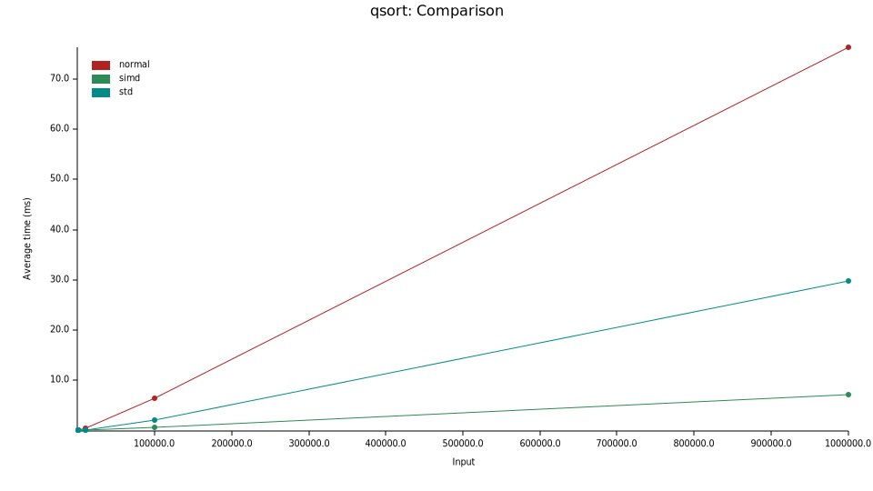

快排
SIMD还有一个让我觉得意想不到的能力是，可以用来做排序。这篇论文提出了一种基于AVX512指令的快排优化算法。
该论文提出快排有两个开销最大的部分：
- partition部分，也就是把比基准小的放基准左边，把基准大的放基准右边——这是快排N*lg(N)前面那个一次的N的来源。
- 短数组排序——当快排划分到小的区间进行排序的时候。
partition
论文提出了新的partition算法，它利用了SIMD批量读出写入、批量比较的能力，尤其是AVX512中的cmp_mask和compressstore运算。这里就详细介绍一下这个算法。
-
首先是，
simd_partition接口，选取arr最后一个元素为基准，函数将arr中小于等于基准的元素放在左边，大于基准的元素放在右边，而函数的返回值是右边的第一个元素的下标（也就是第一个比基准大的元素）。要求数组的长度大于等于两倍的向量长度。#![allow(unused)] fn main() { fn simd_partition(arr: &mut [i32]) -> usize; } -
这个算法主要维护几个下标：
left：从0开始，递增步长一般为向量的长度，直到left == right，用于批量读入数组的值。right：从len - 1开始，递减步长一般为向量的长度，直到left == right，用于批量读入数组的值。left_w：从0开始递增，直到left_w == right_w，用于写入从left或者right中读到小于等于基准的值，每次递增保证left_w左边的值小于等于基准。right_w：从len - 1开始递减，直到left_w == right_w，用于写入从left或者right中读到大于基准的值，每次递增保证right_w右边的值大于基准。
算法的详细代码
#![allow(unused)] fn main() { /// 向量长度，这里为 16 const S: usize = size_of::<__m512i>() / size_of::<i32>(); /// Safety /// - arr.len() > 2*S unsafe fn simd_partition(arr: &mut [i32]) -> usize { let mut left = 0; let mut right = arr.len() - 1; unsafe { // 基准向量 let pivotvec = _mm512_set1_epi32(arr[right]); // 1. 读出第一个向量和最后一个向量的值，并推进`left`和`right`。这两个向量做特殊处理。 let left_val = _mm512_loadu_epi32(arr.as_ptr().offset(left as isize)); let mut left_w = left; left += S; let mut right_w = right; right -= S; let right_val = _mm512_loadu_epi32(arr.as_ptr().offset(right as isize)); // 2. 让`left`和`right`尽可能以一个向量长度的步长向中间推进。 while left + S <= right { let val; // 从`left`或`right`中读出一个向量，并推进 if left - left_w <= right_w - right { val = _mm512_loadu_epi32(arr.as_ptr().offset(left as isize)); left += S; } else { right -= S; val = _mm512_loadu_epi32(arr.as_ptr().offset(right as isize)); } // 将读出的值批量与基准比较 let mask = _mm512_cmp_epi32_mask::<_MM_CMPINT_LE>(val, pivotvec); // 小于等于基准值的个数 let nb_low = mask.count_ones() as usize; // 大于等于基准值的个数 let nb_high = S - nb_low; // 将小于等于基准的部分写到`left_w`中，并推进`left_w` _mm512_mask_compressstoreu_epi32( arr.as_mut_ptr().offset(left_w as isize) as *mut i32 as _, mask, val, ); left_w += nb_low; // 将大于基准的部分写到`right_w`中，并推进`right_w` right_w -= nb_high; _mm512_mask_compressstoreu_epi32( arr.as_mut_ptr().offset(right_w as isize) as *mut i32 as _, !mask, val, ); } // 3. 处理当`left`与`right`之间不足一个向量长度的情况 { let remaining = right - left; let val = _mm512_loadu_epi32(arr.as_ptr().offset(left as isize)); // left = right; let mask = _mm512_cmp_epi32_mask::<_MM_CMPINT_LE>(val, pivotvec); // 只关心`left`和`right`之间的数据 let mask_low = mask & !(0xFFFF << remaining); let mask_high = !mask & !(0xFFFF << remaining); // 下面处理同上 let nb_low = mask_low.count_ones() as usize; let nb_high = mask_high.count_ones() as usize; _mm512_mask_compressstoreu_epi32( arr.as_mut_ptr().offset(left_w as isize) as *mut i32 as _, mask_low, val, ); left_w += nb_low; right_w -= nb_high; _mm512_mask_compressstoreu_epi32( arr.as_mut_ptr().offset(right_w as isize) as *mut i32 as _, mask_high, val, ); } // 4. 再处理一开始没有用于比较的一个向量和最后一个向量（处理方法一致） { let mask = _mm512_cmp_epi32_mask::<_MM_CMPINT_LE>(left_val, pivotvec); let nb_low = mask.count_ones() as usize; let nb_high = S - nb_low; _mm512_mask_compressstoreu_epi32( arr.as_mut_ptr().offset(left_w as isize) as *mut i32 as _, mask, left_val, ); left_w += nb_low; right_w -= nb_high; _mm512_mask_compressstoreu_epi32( arr.as_mut_ptr().offset(right_w as isize) as *mut i32 as _, !mask, left_val, ); } { let mask = _mm512_cmp_epi32_mask::<_MM_CMPINT_LE>(right_val, pivotvec); let nb_low = mask.count_ones() as usize; let nb_high = S - nb_low; _mm512_mask_compressstoreu_epi32( arr.as_mut_ptr().offset(left_w as isize) as *mut i32 as _, mask, right_val, ); left_w += nb_low; right_w -= nb_high; _mm512_mask_compressstoreu_epi32( arr.as_mut_ptr().offset(right_w as isize) as *mut i32 as _, !mask, right_val, ); } // assert_eq!(left_w, right_w); arr.swap(left_w, arr.len() - 1); left_w } } }
这里用一个实际的例子做一下演示，给定数据为arr = [10, 1, 8, 3, 6, 5, 4, 7, 2, 9]，向量长度为2。
----------------------- init --------------------------
arr = [10, 1, 8, 3, 6, 5, 4, 7, 2, 9] pivot = 9
left = 0 | right = 9
left_w = 0 | right_w = 9
----------------------- step1 --------------------------
arr = [10, 1, 8, 3, 6, 5, 4, 7, 2, 9] pivot = 9
left = 2 | right = 7
left_w = 0 | right_w = 9
left_v = [10, 1] | right_v = [7, 2] // 这里其实漏了最后一个9
----------------------- step2 --------------------------
val = [8, 3] // 从`left`读向量。都比 pivot小
arr = [[8, 3], 8, 3, 6, 5, 4, 7, 2, 9] pivot = 9 // 将`val`写入`left_w`
^ ^
left = 4 | right = 7
left_w = 2 | right_w = 9 // 推进`left_w`
----------------------- step2 --------------------------
val = [6, 5] // 从`left`读向量。都比 pivot小
arr = [8, 3, [6, 5], 6, 5, 4, 7, 2, 9] pivot = 9 // 将`val`写入`left_w`
^ ^
left = 6 | right = 7
left_w = 4 | right_w = 9 // 推进`left_w`
----------------------- step3 --------------------------
val = [4] // 读`left`和`right`之间的值，比pivot小
arr = [8, 3, 6, 5, [4], 5, 4, 7, 2, 9] pivot = 9 // 将`val`写入`left_w`
^
left = 7 | right = 7
left_w = 5 | right_w = 9 // 推进`left_w`
----------------------- step4 --------------------------
left_val = [10, 1] // 处理`left_val`，10比`pivot`大，1比`pivot`小
arr = [8, 3, 6, 5, 4, [1, 4], 7, [10, 9]] pivot = 9 // 将[1]写入`left_w`，将[10]写入`right_w - 1`
^ ^
left_w = 6 | right_w = 8 // 推进`left_w`/`right_w`
----------------------- step4 --------------------------
left_val = [7, 2] // 处理`right_val`都比pivot小
arr = [8, 3, 6, 5, 4, 1, [7, 2], 10, 9] pivot = 9 // 将[7, 2]写入`left_w`
^ ^
left_w = 8 | right_w = 8 // 推进`left_w`
----------------------- step5 --------------------------
// 交换`arr[left_w]`和pivot的位置
arr = [8, 3, 6, 5, 4, 1, 7, 2, 9, 10]
^ left_w = 8
最后结果为arr = [8, 3, 6, 5, 4, 1, 7, 2, 9, 10]，返回8。
短数组排序——双调排序(bitonic sort)
双调排序是一种并行排序的算法，在并行的情况下时间复杂度仅为 \(O\left(\log^2\left(n\right)\right) \)。比如说8个元素的双调排序的操作可以用一个图来描述：
这个图从左边输入8个数，遇到连接线的时候将对应的数字进行比较/交换的操作，到右边输出的就是从上到下排好序的数字了。这里从左到右：
(arr[0], arr[1])，(arr[2], arr[3])，(arr[4], arr[5])，(arr[6], arr[7])进行比较交换操作(arr[0], arr[3])，(arr1, arr[2])，(arr[3], arr[7])，(arr[5], arr[6])进行比较和交换操作(arr[0], arr[1])，(arr[2], arr[3])，(arr[4], arr[5])，(arr[6], arr[7])进行比较交换操作(arr[0], arr[7])，(arr[1], arr[6])，(arr[2], arr[5])，(arr[3], arr[4])进行比较和交换操作(arr[0], arr[2])，(arr[1], arr[3])，(arr[4], arr[6])，(arr[5], arr[7])进行比较和交换操作(arr[0], arr[1])，(arr[2], arr[3])，(arr[4], arr[5])，(arr[6], arr[7])进行比较交换操作
这里每一步的比较和交换操作可以用向量操作来完成，比如第一步可以写为：
#![allow(unused)] fn main() { fn bitonic_sort_1v(v: __m256i) -> __m256i { { // 0,1; 2,3; 4,5; 6,7交换 let idxs = _m256_set_epi32(6, 7, 4, 5, 2, 3, 0, 1); let perm = _m256_permutexvar_epi32(idx, v); // compare let mins = _m256_min_epi32(v, perm); let maxs = _m256_max_epi32(perm, v); // exchange // 0,2,4,6位取mins, 1,3,5,7位取maxs v = _mm256_mask_mov_epi32(mins, 0b10101010, maxs); // example: // v: [1, 4, 3, 2] // perm: [4, 1, 2, 3] // mins: [1, 1, 2, 2] // maxs: [4, 4, 3, 3] // res: [1, 4, 2, 3] } // 剩下的类似... } }
目前我的实现中，对于小于等于两个向量长度的数组使用双调排序（刚好覆盖了simd_partition没处理的情况），而对于不满一个或者两个向量长度的数组，会填充i32::MAX。（论文作者的实现则是16个向量长度以下的数组用双调排序）
bench
处理器是11th Gen Intel(R) Core(TM) i7-1185G7 @ 3.00GHz。做了10, 100, 1000, 10000, 100000, 1000000个随机i32排序的bench。
SIMD加速的快排在现有的测试下规模越大的数组里优势越明显，比标准库提供的快排有3~4倍的提升
| simd | normal | std | |
|---|---|---|---|
| 10 | 30.004 ns | 71.013 ns | 38.443 ns |
| 100 | 322.27 ns | 894.56 ns | 666.08 ns |
| 1000 | 3.1232 µs | 24.163 µs | 9.1394 µs |
| 10000 | 37.535 µs | 537.69 µs | 177.11 µs |
| 100000 | 572.28 µs | 6.4045 ms | 2.1345 ms |
| 1000000 | 7.1806 ms | 76.253 ms | 29.755 ms |

不过这篇论文是基于AVX512指令设计的快排算法，通用性很一般。不过Google提出了一个新的算法，跨平台，使用不同平台中提供的SIMD指令进行排序，同时也保证了效率。。（不过我没看懂）